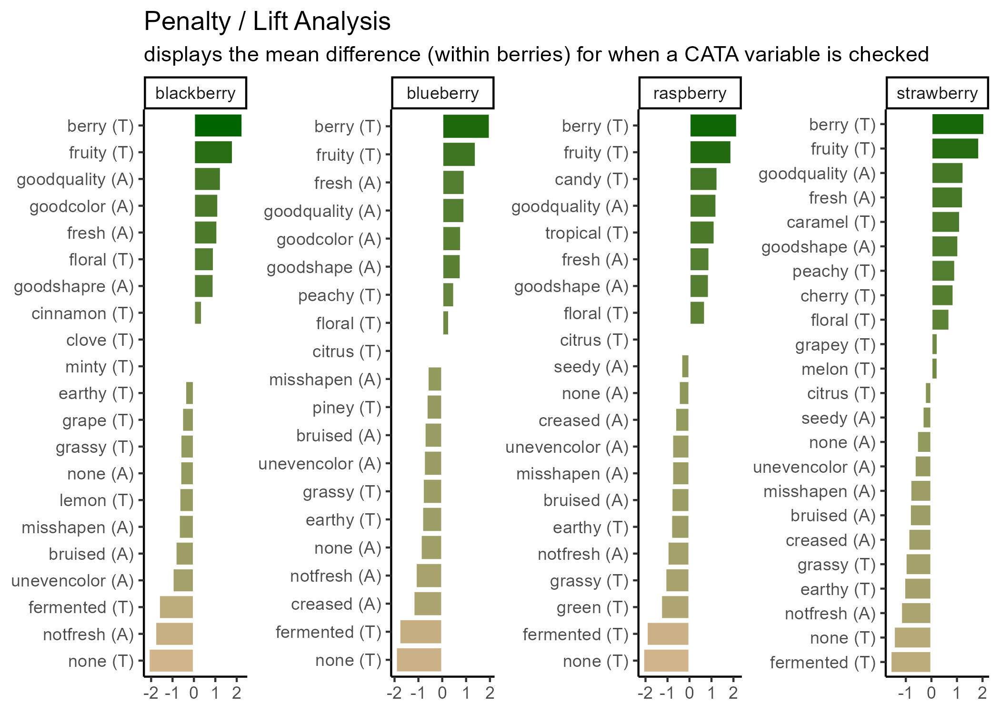
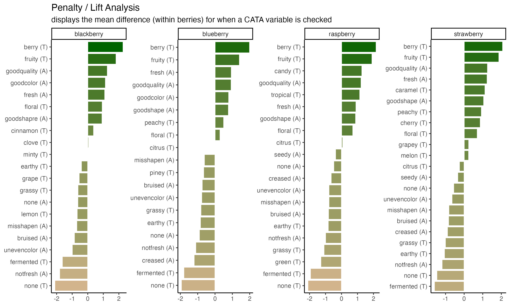
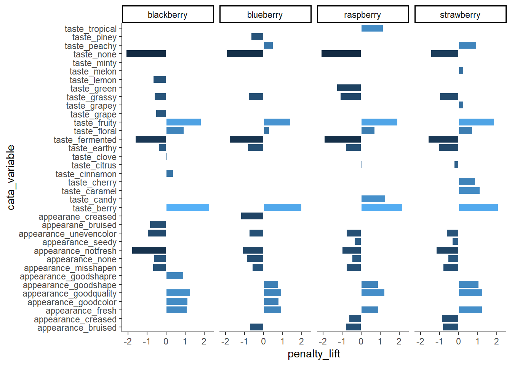

3 Fine-Tuning Publication-Quality ggplots
The plots we’ve been making so far are fairly straightforward demonstrations. At the very end of Chapter 2, we briefly showed you the code and results for these two plots:


We’re going to spend the rest of the workshop running through the tips and tricks we used to make these look polished. It’s not an exhaustive list of the things you can change or tweak, though, so more than anything, we hope you walk away with the ability to identify what parts of a plot you want to change and the skills to figure out how to change it.
But first, something that everyone will need for almost every plot:
3.1 Exporting and Saving Plots
It may seem like a weird time to be talking about saving plots, when we haven’t gotten to the “fine-tuning” yet, but you’ve already seen a few examples of things that change when the aspect ratio of the plot or the monitor you’re viewing it on changes slightly. It is basically impossible to export a ggplot at the resolution needed for publishing without changing the aspect ratio, relative sizes, or space between some elements from what you’re looking at in the Plots pane or the .Rmd chunk output.
It’s good practice to export your plot as an image (or pdf or knit-together document or however else you plan to export it) and re-export it periodically as you go through fine-tuning.
This is also, probably, the most important part of this chapter. You will have to get every plot that you publish out of R somehow, after all!
Exporting Images with ggsave()
You can, as we’ve already discussed, save a ggplot object in a .rds file. But that won’t let you put it into your powerpoint, or manuscript, or take it to the printer. You need an image file. The exact type of image will depend on the other software you’re using for your report, presentation, paper, book, etc.
The easiest way to reproducibly save plots, so that all of your export options are in your code and you might be able to recreate it on a different computer, is with the function ggplot2::ggsave(), which works similarly to the write_*() functions and save(). You give it a file name to save to, relative to the current working directory, and then the variable that has your ggplot.
We saved our image as a JPEG file, because JPEG is one of the formats preferred by Food Quality and Preference. ggsave() supports a wide variety of image formats and will automatically use the file type corresponding to the file extension (the stuff after the .) in the filename argument.

Note that ggsave() is like making a .pdf version of your working documents: you will not be able to read the plot images into R for editing anymore, no matter which format you save in.
We can also specify the width and height of our plot in inches, centimeters, or several other possible units. Aside from the aspect ratio of height to width, the size also affects how large various elements look, since geom_*() and text sizes are ultimately defined as fractions of inches.
Start by exporting your file at different width and height combinations until it looks legible, with readable text and other elements.
ggsave("img/penalty-lift-10x6.jpeg", p1_berry_penalty,
width = 10,
height = 6,
units = "in") #inches
And then figure out the dpi, or number of dots per inch, needed to have a file that will print well. Do not just use the DPI you want to print at, especially if you’re planning to use an image for a poster.
The FQAP Guide for Authors also tells us that it wants “combination figures”, which will include most graphs, at or above 500 dpi. A double column figure is about 7.5 inches or 190mm wide, so we need the image to be \(7.5 \times 500 = 3750\) pixels wide. Since our nice plot had width = 10, we’ll set the dpi so that \(height \times dpi \geq 3750\).
ggsave("img/penalty-lift-double-column-width.jpeg", p1_berry_penalty,
width = 10,
height = 6,
units = "in", #inches
dpi = 400) #slightly above 3750 / 10. Always err on the side of slightly too big!!We go into a lot more detail on common file types and image resolution math in the Appendix.
3.2 Fine-tuning bar plots & facets with different categorical variables
We’ll start with the penalty analysis plot.
p1_berry_penalty uses some tricks from the stringr and tidytext packages in order to give us easy-to-read labels. Using the existing column names and variable-codes in our original data to make a first draft of a plot, it would’ve looked more like this:
berry_penalty_analysis_data %>%
ggplot(mapping = aes(x = cata_variable, y = penalty_lift)) +
geom_col(aes(fill = penalty_lift), color = "white", show.legend = FALSE) +
facet_wrap(~berry) +
theme_classic() +
theme(axis.text.x = element_text(angle = 90))
Which we’re showing because we have seen similar plots published in journal articles, with the difficult-to-read axes, underscores, redundant axis labels, and all. We can make this more readable by reordering the CATA attributes, shortening and reformatting the labels, and possibly by removing some extraneous elements like the cata_variable label. These are common steps that make a huge difference.
3.2.1 Horizontal text with coord_flip()
We’ve used coord_flip() a few times already, and it’s pretty straightforward to use–you just have to add it to a ggplot() call and it’ll make your x axis the vertical axis and your y axis the horizontal.
berry_penalty_analysis_data %>%
ggplot(mapping = aes(x = cata_variable, y = penalty_lift)) +
geom_col(aes(fill = penalty_lift), color = "white", show.legend = FALSE) +
facet_wrap(~berry, nrow = 1) +
theme_classic() +
coord_flip()
Even though the CATA attributes are still cramped and this isn’t the best use of space, they’re much easier to read now. If you’ve only got one categorical axis, it’s almost always going to be more readable to have it be the vertical axis so that the text is horizontal.
3.2.2 Ordered Categorical Variables
Many of the figures we’ve made so far have had an axis with a categorical variable. Have you figured out how ggplot2 orders the levels of categorical variables? If you have noticed, it’s likely because it’s in a different order than the one we’d like.
berry_penalty_analysis_data %>%
ggplot(mapping = aes(x = cata_variable, y = penalty_lift)) +
geom_col(aes(fill = penalty_lift), color = "white", show.legend = FALSE) +
facet_wrap(~berry, nrow = 1) +
coord_flip() +
theme_classic()
The CATA attributes are in alphabetical order (with the start of the alphabet the closest to 0). This is how ggplot2 treats all character variables, and you can exert some control over the ordering by turning the variable into an ordered factor.
3.2.2.1 Specifying Ordinal Variables as Factors
You can order variables by hand, if there’s a particular order you have in mind:
berry_penalty_analysis_data %>%
filter(str_detect(cata_variable, "taste")) %>%
mutate(cata_variable = factor(cata_variable,
levels = c("taste_fruity",
"taste_melon", "taste_peachy", "taste_grapey", "taste_grape",
"taste_berry", "taste_cherry",
"taste_citrus", "taste_lemon",
"taste_tropical",
"taste_candy", "taste_caramel",
"taste_green", "taste_grassy", "taste_piney", "taste_minty",
"taste_earthy", "taste_fermented",
"taste_cinnamon", "taste_clove",
"taste_floral",
"taste_none"))) -> berry_penalty_manual_factors
berry_penalty_manual_factors %>%
ggplot(mapping = aes(x = cata_variable, y = penalty_lift)) +
geom_col(aes(fill = penalty_lift), color = "white", show.legend = FALSE) +
facet_wrap(~berry, nrow = 1) +
coord_flip() +
theme_classic()
Note that the attribute you list first when you’re specifying the levels will become 1, then 2, then 3. With coord_flip(), that puts it at the bottom of the plot.
berry_penalty_manual_factors %>%
distinct(cata_variable) %>%
mutate(variable_number = as.numeric(cata_variable))## # A tibble: 22 × 2
## cata_variable variable_number
## <fct> <dbl>
## 1 taste_berry 6
## 2 taste_cinnamon 19
## 3 taste_clove 20
## 4 taste_earthy 17
## 5 taste_fermented 18
## 6 taste_floral 21
## 7 taste_fruity 1
## 8 taste_grape 5
## 9 taste_grassy 14
## 10 taste_lemon 9
## # ℹ 12 more rowsThis gives us control, but it’s pretty annoying to write out for large lists of attributes, and you have to be sure the spelling and capitalization match exactly. Often, like with the penalty analysis plots, what we actually want to do is order the Attributes in terms of some other numerical variable, like frequency or size of penalty.
One way is to arrange() the data the way you want it and then use that order to specify the levels.
berry_penalty_analysis_data %>%
# Counting the number of times each attribute is used across all products:
group_by(cata_variable) %>%
mutate(variable_count = sum(count)) %>%
ungroup() %>%
# Arranging from least-to-most used:
arrange(variable_count) %>%
# Converting to a factor, so the least-used will be 1st, then the next:
mutate(cata_variable = factor(cata_variable, levels = unique(cata_variable),
ordered = TRUE),
variable_number = as.numeric(cata_variable)) -> berry_penalty_frequency_factors
#Now the plot:
berry_penalty_frequency_factors %>%
ggplot(mapping = aes(x = cata_variable, y = penalty_lift)) +
geom_col(aes(fill = penalty_lift), color = "white", show.legend = FALSE) +
facet_wrap(~berry, nrow = 1) +
coord_flip() +
theme_classic()
3.2.2.2 Facets with Different Category-Orders
You’ll notice that our reordered categorical axes still have the same order across all of the plots. This would be true even if we used the within-product sums already in the count column to calculate levels. The order is based on factor levels, which are fixed within each column: Fresh_Apples can’t be “more than” Dry in one part of the cata_variable column and “less than” in another part.
On its own, facet_wrap(..., scales = "free") can drop unneeded attributes from plots, but it will still keep the same order of the attributes across all axes.
berry_penalty_frequency_factors %>%
ggplot(mapping = aes(x = cata_variable, y = penalty_lift)) +
geom_col(aes(fill = penalty_lift), color = "white", show.legend = FALSE) +
facet_wrap(~berry, nrow = 1) +
coord_flip() +
theme_classic()
If you have a faceted plot and you want each facet to have a different ordering of the terms, like in our big penalty analysis example, you’ll have to use tidytext::reorder_within(), tidytext::scale_*_reordered(), and facet_wrap(..., scales = "free"), all at once:
berry_penalty_analysis_data %>%
mutate(cata_variable_clean = tidytext::reorder_within(cata_variable_clean,
by = count,
within = berry)) %>%
ggplot(mapping = aes(x = cata_variable_clean, y = penalty_lift)) +
geom_col(aes(fill = penalty_lift), color = "white", show.legend = FALSE) +
tidytext::scale_x_reordered() +
facet_wrap(~berry, scales = "free", nrow = 1) +
coord_flip() +
theme_classic()
3.2.3 Making labels look okay: Powerful text manipulation with stringr
A good R variable or column name doesn’t have any spaces or punctuation other than underscores (_) and dots (.), to avoid all those pesky backticks (```) in our code.
This is very different from what a good label in a plot looks like. You’ll often want to make some sort of mass changes to column names or text variables before plotting, in order to address this.
The stringr package is a part of the tidyverse, so you have it already loaded whenever you run library(tidyverse). It has a lot of useful functions for working with text (called “strings” in many programming languages), mostly of the form str_*(). One thing you can do is change labels to uppercase, lowercase, “sentence case”, or “title case” (first letter of each word capitalized), as appropriate:
berry_penalty_analysis_data %>%
select(berry) %>%
mutate(Upper = str_to_upper(berry),
Title = str_to_title(berry)) # Capitalizes the first letter of each word## # A tibble: 85 × 3
## berry Upper Title
## <chr> <chr> <chr>
## 1 blackberry BLACKBERRY Blackberry
## 2 blackberry BLACKBERRY Blackberry
## 3 blackberry BLACKBERRY Blackberry
## 4 blackberry BLACKBERRY Blackberry
## 5 blackberry BLACKBERRY Blackberry
## 6 blackberry BLACKBERRY Blackberry
## 7 blackberry BLACKBERRY Blackberry
## 8 blackberry BLACKBERRY Blackberry
## 9 blackberry BLACKBERRY Blackberry
## 10 blackberry BLACKBERRY Blackberry
## # ℹ 75 more rows3.2.3.1 Replacing text
str_replace() and str_replace_all() are very useful for dealing with underscores or periods. You give it string, the text vector you want to modify (inside mutate(), a column name); then pattern, the character(s) you want to replace; then replacement, what you want to replace them with.
## # A tibble: 85 × 5
## berry cata_variable cata_variable_clean penalty_lift count
## <chr> <chr> <chr> <dbl> <int>
## 1 blackberry appearance: fresh fresh (A) 1.10 977
## 2 blackberry appearance: goodcolor goodcolor (A) 1.14 1037
## 3 blackberry appearance: goodquality goodquality (A) 1.26 859
## 4 blackberry appearance: goodshapre goodshapre (A) 0.923 787
## 5 blackberry appearance: misshapen misshapen (A) -0.708 447
## 6 blackberry appearance: none none (A) -0.641 13
## 7 blackberry appearance: notfresh notfresh (A) -1.81 127
## 8 blackberry appearance: unevencolor unevencolor (A) -0.998 163
## 9 blackberry appearane: bruised bruised (A) -0.861 190
## 10 blackberry taste: berry berry (T) 2.27 793
## # ℹ 75 more rowsThey can both be as long as you like. If pattern = _ and there’s more than one _ in one of the strings, str_replace() will only replace the first one and str_replace_all() will replace them all.
## [1] "long text_with_many_underscores"## [1] "long text with many underscores"You can add multiple sets of patterns and replacements to str_replace_all() using a named list: c("pattern1" = "replace1", "pattern2" = "replace2". This is useful to, for instance, fix multiple typos like “goodshapre”. Unlike the case_when() example we showed before, you can fix typos that occur anywhere in the text, even if they’re only parts of a word.
berry_penalty_analysis_data %>%
mutate(cata_variable = str_replace_all(cata_variable,
c("shapre" = "shape",
"appearane" = "appearance",
"_" = " ")))## # A tibble: 85 × 5
## berry cata_variable cata_variable_clean penalty_lift count
## <chr> <chr> <chr> <dbl> <int>
## 1 blackberry appearance fresh fresh (A) 1.10 977
## 2 blackberry appearance goodcolor goodcolor (A) 1.14 1037
## 3 blackberry appearance goodquality goodquality (A) 1.26 859
## 4 blackberry appearance goodshape goodshapre (A) 0.923 787
## 5 blackberry appearance misshapen misshapen (A) -0.708 447
## 6 blackberry appearance none none (A) -0.641 13
## 7 blackberry appearance notfresh notfresh (A) -1.81 127
## 8 blackberry appearance unevencolor unevencolor (A) -0.998 163
## 9 blackberry appearance bruised bruised (A) -0.861 190
## 10 blackberry taste berry berry (T) 2.27 793
## # ℹ 75 more rowsBe careful using short patterns, because they will replace every example even if it’s only part of a word.
#This can lead to unintentional side-effects
c("nocolor", "none", "cornonthecob", "anode") %>%
str_replace_all("no", " NO ")## [1] " NO color" " NO ne" "cor NO nthecob" "a NO de"#Or it can be useful for fixing lots of similar problems all at once
berry_penalty_analysis_data %>%
mutate(cata_variable = str_replace_all(cata_variable,
c("not" = "not ",
"good" = "good ",
"uneven" = "uneven ",
"_" = " ")))## # A tibble: 85 × 5
## berry cata_variable cata_variable_clean penalty_lift count
## <chr> <chr> <chr> <dbl> <int>
## 1 blackberry appearance fresh fresh (A) 1.10 977
## 2 blackberry appearance good color goodcolor (A) 1.14 1037
## 3 blackberry appearance good quality goodquality (A) 1.26 859
## 4 blackberry appearance good shapre goodshapre (A) 0.923 787
## 5 blackberry appearance misshapen misshapen (A) -0.708 447
## 6 blackberry appearance none none (A) -0.641 13
## 7 blackberry appearance not fresh notfresh (A) -1.81 127
## 8 blackberry appearance uneven color unevencolor (A) -0.998 163
## 9 blackberry appearane bruised bruised (A) -0.861 190
## 10 blackberry taste berry berry (T) 2.27 793
## # ℹ 75 more rowsSo far, we’ve been replacing letters and underscores, which is what we have in our example data. You can also use str_replace() for periods (.), although you may be surprised when you first try:
## [1] " "## [1] "long text with many periods"We have to escape the period (with an escaped backslash, technically, but for now just know that you must put two backslashes \\ before special characters when using stringr). Because the str_* functions with a pattern can use Regular Expressions (or regex), the characters (\, ., [, ], {, }, (, ), <, >, *, +, -, =, !, ?, ^, $, and |) need to be escaped with two backslashes if you need to replace them.
Regex are extremely powerful tools for finding patterns in text, similar to the intuitive ways a human might recognize something like an email address, a measurement, or a parenthetical. We will not be talking about regex today, but if you want to see some examples and resources for learning how to use them, we’ve provided a short overview and links to some resources in the Appendix.
3.2.3.2 Splitting and combining text
It’s also very common that you may have variable names in one column which actually represent multiple variables, and may want to, say, color-code the modality of the cata variables so that appearance attributes are one color and taste attributes are another.
There are a few versions of the tidyr::separate_wider_*() function that can, for example, split the cata_variable column into two columns, one with everything before the delimiter (here, an underscore) and one with everything after the delimiter. Be very careful using separate_wider_delim() like this if some rows may have more underscores (or whatever your delimiter is) than others.
berry_penalty_by_modality <- berry_penalty_analysis_data %>%
separate_wider_delim(cata_variable, "_",
names = c("mode", "variable"),
cols_remove = FALSE)
berry_penalty_by_modality## # A tibble: 85 × 7
## berry mode variable cata_variable cata_variable_clean penalty_lift count
## <chr> <chr> <chr> <chr> <chr> <dbl> <int>
## 1 blackber… appe… fresh appearance_f… fresh (A) 1.10 977
## 2 blackber… appe… goodcol… appearance_g… goodcolor (A) 1.14 1037
## 3 blackber… appe… goodqua… appearance_g… goodquality (A) 1.26 859
## 4 blackber… appe… goodsha… appearance_g… goodshapre (A) 0.923 787
## 5 blackber… appe… misshap… appearance_m… misshapen (A) -0.708 447
## 6 blackber… appe… none appearance_n… none (A) -0.641 13
## 7 blackber… appe… notfresh appearance_n… notfresh (A) -1.81 127
## 8 blackber… appe… unevenc… appearance_u… unevencolor (A) -0.998 163
## 9 blackber… appe… bruised appearane_br… bruised (A) -0.861 190
## 10 blackber… taste berry taste_berry berry (T) 2.27 793
## # ℹ 75 more rows# Which would let you easily color-code your ggplot based on the new mode column
berry_penalty_by_modality %>%
ggplot(aes(x = cata_variable, y = count, fill = mode)) +
geom_col() +
coord_flip() (We’ll get to the typo in just a second–you already know how to fix it, though!)
(We’ll get to the typo in just a second–you already know how to fix it, though!)
If you want to put multiple columns of text together, you can use either tidyr::unite() or stringr::str_c() (string combine).
berry_penalty_by_modality %>%
mutate(cata_variable_2 = str_c(variable, mode, sep = " ")) %>%
unite(variable, mode, col = "cata_variable_3", sep = " ")## # A tibble: 85 × 7
## berry cata_variable_3 cata_variable cata_variable_clean penalty_lift count
## <chr> <chr> <chr> <chr> <dbl> <int>
## 1 blackbe… fresh appearan… appearance_f… fresh (A) 1.10 977
## 2 blackbe… goodcolor appe… appearance_g… goodcolor (A) 1.14 1037
## 3 blackbe… goodquality ap… appearance_g… goodquality (A) 1.26 859
## 4 blackbe… goodshapre app… appearance_g… goodshapre (A) 0.923 787
## 5 blackbe… misshapen appe… appearance_m… misshapen (A) -0.708 447
## 6 blackbe… none appearance appearance_n… none (A) -0.641 13
## 7 blackbe… notfresh appea… appearance_n… notfresh (A) -1.81 127
## 8 blackbe… unevencolor ap… appearance_u… unevencolor (A) -0.998 163
## 9 blackbe… bruised appear… appearane_br… bruised (A) -0.861 190
## 10 blackbe… berry taste taste_berry berry (T) 2.27 793
## # ℹ 75 more rows
## # ℹ 1 more variable: cata_variable_2 <chr>You may have noticed that berry_penalty_analysis_data has both cata_variable and cata_variable_clean, and that the latter is shorter, which fits better on the page. You now know all of the tricks that we used to get from one to the other:
berry_penalty_analysis_data %>%
# Fixing typos
mutate(cata_variable = str_replace_all(cata_variable, c("appearane" = "appearance",
"shapre" = "shape"))) %>%
# Separating the modality from the attribute name
separate_wider_delim(cata_variable, "_",
names = c("mode", "variable"),
cols_remove = FALSE) %>%
# Shorthand for the taste and appearance variables
mutate(mode = case_when(mode == "taste" ~ "(T)",
mode == "appearance" ~ "(A)")) %>%
# Putting them back together
unite(variable, mode, col = "cata_variable_clean", sep = " ")## # A tibble: 85 × 5
## berry cata_variable_clean cata_variable penalty_lift count
## <chr> <chr> <chr> <dbl> <int>
## 1 blackberry fresh (A) appearance_fresh 1.10 977
## 2 blackberry goodcolor (A) appearance_goodcolor 1.14 1037
## 3 blackberry goodquality (A) appearance_goodquality 1.26 859
## 4 blackberry goodshape (A) appearance_goodshape 0.923 787
## 5 blackberry misshapen (A) appearance_misshapen -0.708 447
## 6 blackberry none (A) appearance_none -0.641 13
## 7 blackberry notfresh (A) appearance_notfresh -1.81 127
## 8 blackberry unevencolor (A) appearance_unevencolor -0.998 163
## 9 blackberry bruised (A) appearance_bruised -0.861 190
## 10 blackberry berry (T) taste_berry 2.27 793
## # ℹ 75 more rows3.2.4 Removing Plot Elements
Plots are easiest to read when they have only the information that’s actually relevant, so some labels and other elements that ggplot2 adds by default can end up being extraneous and distracting.
We covered using theme() to remove elements with element_blank() (e.g., + theme(panel.grid = element_blank()) to get rid of the grid lines), but there are some exceptions to this rule.
When we’re using tidytext::reorder_within() to order each individual facet from highest penalty to highest lift, any color-coding for the lift is redundant info and we don’t really need a legend to spell it out:
berry_penalty_analysis_data %>%
mutate(cata_variable_clean = tidytext::reorder_within(x = cata_variable_clean,
by = penalty_lift,
within = berry)) %>%
ggplot(mapping = aes(x = cata_variable_clean, y = penalty_lift)) +
geom_col(aes(fill = penalty_lift), color = "white") +
facet_wrap(~berry, scales = "free", nrow = 1) +
coord_flip() +
tidytext::scale_x_reordered()
We also don’t really need the axis labels, since neither has units and anyone unfamiliar with a penalty-lift plot will need more explanation than an axis label can really provide, but cata_variable_clean is especially redundant.
berry_penalty_analysis_data %>%
mutate(cata_variable_clean = tidytext::reorder_within(x = cata_variable_clean,
by = penalty_lift,
within = berry)) %>%
ggplot(mapping = aes(x = cata_variable_clean, y = penalty_lift)) +
geom_col(aes(fill = penalty_lift), color = "white") +
facet_wrap(~berry, scales = "free", nrow = 1) +
coord_flip() +
tidytext::scale_x_reordered() +
theme(axis.title.y = element_blank(),
legend.position = "none")
We can remove these both with one call to theme(), but the axis title is removed with axis.title.y = element_blank() and the legend is removed with legend.position = "none". And, yes, that is axis.title.y, referring to the same cata_variable_clean axis that scale_x_reordered() is calling the x-axis.
Some ggplot2 functions will always refer to whatever you specified in aes(x = ...) as the x-axis, while some will refer to the horizontal axis as the x-axis, meaning that coord_flip() can make things confusing. It’s not worth trying to memorize or find patterns–this is something you’ll have to tweak by trial and error.
Sometimes, there are multiple ways of removing a plot element, and whichever one you remember is fine to use. One notable example that may save you some typing is the labs() function, which lets you label the x and y axes, the whole plot title, and so on with a slightly easier-to-remember interface than theme(). Setting any of the labs() arguments = NULL will remove it from the plot.
berry_penalty_analysis_data %>%
mutate(cata_variable_clean = tidytext::reorder_within(x = cata_variable_clean,
by = penalty_lift,
within = berry)) %>%
ggplot(mapping = aes(x = cata_variable_clean, y = penalty_lift)) +
geom_col(aes(fill = penalty_lift), color = "white") +
facet_wrap(~berry, scales = "free", nrow = 1) +
coord_flip() +
tidytext::scale_x_reordered() +
labs(x = NULL, y = "Penalty",
title = "Penalty / Lift Analysis",
subtitle = "displays the mean difference (within berries) for when a CATA variable is checked")
Note that, unlike theme(), labs(x = ...) refers to the same x as aes(x = ...).
3.2.5 Putting it all together
Now, at long last, we’re ready to walk line-by-line through the example penalty analysis figure that we’ve just been copy-pasting so far in the workshop.
berry_penalty_analysis_data %>%
mutate(cata_variable_clean = tidytext::reorder_within(x = cata_variable_clean,
by = penalty_lift,
within = berry)) %>%
ggplot(mapping = aes(x = cata_variable_clean, y = penalty_lift)) +
geom_col(aes(fill = penalty_lift), color = "white") +
facet_wrap(~berry, scales = "free", nrow = 1) +
tidytext::scale_x_reordered() +
coord_flip() +
theme_classic() +
scale_fill_gradient(low = "tan", high = "darkgreen") +
labs(title = "Penalty / Lift Analysis",
subtitle = "displays the mean difference (within berries) for when a CATA variable is checked") +
theme(axis.title = element_blank(),
legend.position = "none")
3.3 Fine-tuning biplots with different types of variables
p2_ca_cider_cata has a lot of different aesthetics, some of . Using the existing column names and variable-codes in our original data to make a first draft of a plot, it would’ve looked more like this:
draft_cider_plot <- ca_cider_coords %>%
ggplot(mapping = aes(x = `Dim 1`, y = `Dim 2`, color = type)) +
geom_point() +
ggrepel::geom_text_repel(mapping = aes(label = name)) +
theme_bw() +
scale_color_manual(values = c("darkorange", "darkgreen"))
draft_cider_plot
3.3.1 Axis and plot labels based on variables
The FactoMineR plot we briefly showed in Chapter 1 included the percentage of inertia explained by each dimension in the axis labels, which is extremely nice, even though it’s difficult to adjust the FactoMineR plot directly.
The FactoMineR::CA() function gives us all of the information we need to add this to our ggplot, and in our data set it’s saved in the ca_cider$eig matrix.
## eigenvalue percentage of variance cumulative percentage of variance
## dim 1 0.055398432 60.446394 60.44639
## dim 2 0.017914259 19.546625 79.99302
## dim 3 0.009328142 10.178132 90.17115
## dim 4 0.005637110 6.150769 96.32192
## dim 5 0.003370919 3.678080 100.00000if you give str_c() multiple vectors with the same length, it’ll combine the first element of the first vector with the first element of the second vector, and so on. So we could easily make a list of plot labels for each axis we have:
str_c(rownames(ca_cider$eig),
" (", # you'll need to add the symbols yourself, including spaces
round(ca_cider$eig[, 2], 1),
"%)")## [1] "dim 1 (60.4%)" "dim 2 (19.5%)" "dim 3 (10.2%)" "dim 4 (6.2%)"
## [5] "dim 5 (3.7%)"# Or you can do it one at a time:
str_c("Dimension 1 (",
round(ca_cider$eig[1, 2], 1),
"% of intertia)")## [1] "Dimension 1 (60.4% of intertia)"## [1] "Dimension 2 (19.5% of intertia)"To add it to the plot, we can use the labs() function, which lets you label the x and y axes, the whole plot title, and so on.
draft_cider_plot +
labs(x = str_c("Dimension 1, ", round(ca_cider$eig[1, 2], 1), "% of inertia"),
y = str_c("Dimension 2, ", round(ca_cider$eig[2, 2], 1), "% of inertia"),
subtitle = "Correspondence Analysis biplot (symmetric)",
#if you want to insert a line break, you can use `\n`:
title = "Effect of cider serving temperature on consumer sensory perception\nbased on CATA data")
3.3.2 Setting up the Cartesian plane
You may have noticed that ggplot2 doesn’t give any particular weight to the origin, or the gridlines that pass through it, even though (0,0) is often meaningful and we may want to see which points are positive or negative at a glance. Removing all gridlines or using theme_void() removes the x- and y-axes as well!
The easiest way to address this is just to add two lines that are thicker/darker/different at \(y = 0\) and \(x = 0\), which we can do by adding more geom_*()s…
draft_cider_plot +
theme_void() +
geom_vline(xintercept = 0, color = "grey", linewidth = 1) +
geom_hline(yintercept = 0, color = "grey", linewidth = 1)
But if you aren’t careful and add them after your other geoms, it will add them on top of the rest of the plot. In general, you should go ahead and add your axis lines right after calling ggplot(), before anything else, so that they’re drawn on first and every other geom_*() goes on top of it.
ca_cider_coords %>%
ggplot(mapping = aes(x = `Dim 1`, y = `Dim 2`, color = type)) +
geom_vline(xintercept = 0) +
geom_hline(yintercept = 0) +
geom_point() +
ggrepel::geom_text_repel(mapping = aes(label = name)) +
theme_void()
You can also make your plot more intuitive to read by ensuring that 1 unit of the x-axis is the same distance as one unit on the y-axis, using coord_equal().
ca_cider_coords %>%
ggplot(mapping = aes(x = `Dim 1`, y = `Dim 2`, color = type)) +
geom_vline(xintercept = 0) +
geom_hline(yintercept = 0) +
geom_point() +
ggrepel::geom_text_repel(mapping = aes(label = name)) +
theme_bw() +
coord_equal()
This will often make plots resulting from SVD wider than they are tall, since the 1st dimension will definitionally explain more variation in the data.
3.3.3 Using only part of the dataset for each geom
Many methods of SVD, including Correspondence Analysis, combine points from different datasets or yield coordinates for row and column variables that you may want to display significantly differently–maybe you want your PCA columns to be arrows instead of points, or (as you’ve seen above) having a point and a text label for every attribute is too busy. How do we plot only a subset of points for certain geom_*()s?
You already know how to make certain subsets of points a different shape, color, size, opacity, and so on. But how do you avoid plotting certain subsets at all?
You have to make a data frame with only the rows that you want e.g., geom_point(), to plot, and pass it into the data argument. We’ll show how to do this using the tidyverse function filter(), but if there’s another way you’re more comfortable with then use that instead.
ca_cider_coords %>%
ggplot(mapping = aes(x = `Dim 1`, y = `Dim 2`, color = type)) +
geom_point(data = ca_cider_coords %>% filter(type == "row")) +
ggrepel::geom_text_repel(mapping = aes(label = name)) +
theme_bw()
If the columns happened to have different names, you’d have to specify the aes() mappings separately in each geom_*(), and it may make more sense to start with an empty ggplot() call and then add on geom_*()s each with their own mapping and data arguments if there’s just one geom_*() per data frame.
3.3.4 Tweaking legends
Legends can often get busy, or have information on them that’s not actually clarifying anything in the plot, especially when you’ve got geom_*()s on the same plot using different datasets so that, for example, the color of the points isn’t adding anything.
ca_cider_coords %>%
ggplot(mapping = aes(x = `Dim 1`, y = `Dim 2`, color = type)) +
geom_point(aes(shape = Temperature),
data = ca_cider_coords %>% filter(type == "row")) +
ggrepel::geom_text_repel(mapping = aes(label = name)) +
theme_bw()
If you want to remove specific geoms from the legend, then you have to adjust your geom_*() calls.
ca_cider_coords %>%
ggplot(mapping = aes(x = `Dim 1`, y = `Dim 2`, color = type)) +
geom_point(aes(shape = Temperature),
data = ca_cider_coords %>% filter(type == "row"),
show.legend = FALSE) +
ggrepel::geom_text_repel(mapping = aes(label = name)) +
theme_bw() If you want to move specific aesthetics (
If you want to move specific aesthetics (linetype, linewidth, color, shape, etc) from the legend, then you can add the guides() function to your plot and specify which ones should be in the legend and which shouldn’t.
ca_cider_coords %>%
ggplot(mapping = aes(x = `Dim 1`, y = `Dim 2`, color = type)) +
geom_point(aes(shape = Temperature),
data = ca_cider_coords %>% filter(type == "row")) +
ggrepel::geom_text_repel(mapping = aes(label = name)) +
theme_bw() +
guides(shape = guide_legend(),
color = "none")
3.3.5 Aesthetics that can’t use scale_*() functions
It’s also common for row and column biplots to use different text styling for the row and column variables. Based on what you know so far, since we have the row/column designation in the type column, you might start out trying to set the fontface aesthetic like this:
ca_cider_coords %>%
ggplot(mapping = aes(x = `Dim 1`, y = `Dim 2`, color = type)) +
geom_point() +
ggrepel::geom_text_repel(mapping = aes(label = name, fontface = type)) +
theme_bw() +
scale_color_manual(values = c("darkorange", "darkgreen"))## Error in FUN(X[[i]], ...): invalid fontface rowYou can map variable levels to colors, shapes, sizes, and so on using the scale_*() functions, but not all aesthetics can be controlled in this way. Most of the exceptions are related to text–font face, font family, and the justification of the text require that you have a variable that contains the name or value directly (plain, bold, italic, or bold.italic for fontface; serif, sans-serif, or monospace for family; and a number from 0-1 for hjust and vjust), if one geom_text() should have different values for different rows.
Basically, if we want to accomplish this in ggplot2, we’ll need to make a column with plain for our rows with samples and italic for our rows with CATA variables.
ca_cider_coords %>%
mutate(font = if_else(type == "row", "plain", "italic")) %>%
ggplot(mapping = aes(x = `Dim 1`, y = `Dim 2`, color = type)) +
geom_point() +
ggrepel::geom_text_repel(mapping = aes(label = name, fontface = font)) +
theme_bw() +
scale_color_manual(values = c("darkorange", "darkgreen"))
3.3.6 Putting it all together
Finally, as our last act, we’re ready to walk line-by-line through the last example figure, our fancier correspondence analysis plot.
nice_cider_labels <-
labs(x = str_c("Dimension 1, ", round(ca_cider$eig[1, 2], 1), "% of inertia"),
y = str_c("Dimension 2, ", round(ca_cider$eig[2, 2], 1), "% of inertia"),
subtitle = "Correspondence Analysis biplot (symmetric)",
title = "Effect of cider serving temperature on consumer sensory perception")
ca_cider_termplot <-
ca_cider_coords %>%
mutate(font = if_else(type == "row", "plain", "italic")) %>%
ggplot(aes(x = `Dim 1`, y = `Dim 2`)) +
geom_vline(xintercept = 0, linetype = "dashed", color = "darkgrey") +
geom_hline(yintercept = 0, linetype = "dashed", color = "darkgrey") +
geom_point(aes(color = type, shape = Temperature),
data = ca_cider_coords %>% filter(type == "row"),
size = 3) +
ggrepel::geom_text_repel(aes(label = name, color = type, fontface = font),
show.legend = FALSE) +
coord_equal() +
theme_bw() +
theme(legend.position = "bottom") +
nice_cider_labels +
scale_color_manual(values = c("darkorange", "darkgreen")) +
scale_shape_manual(values = c(8, 16)) +
guides(shape = guide_legend(),
color = "none")
ca_cider_termplot